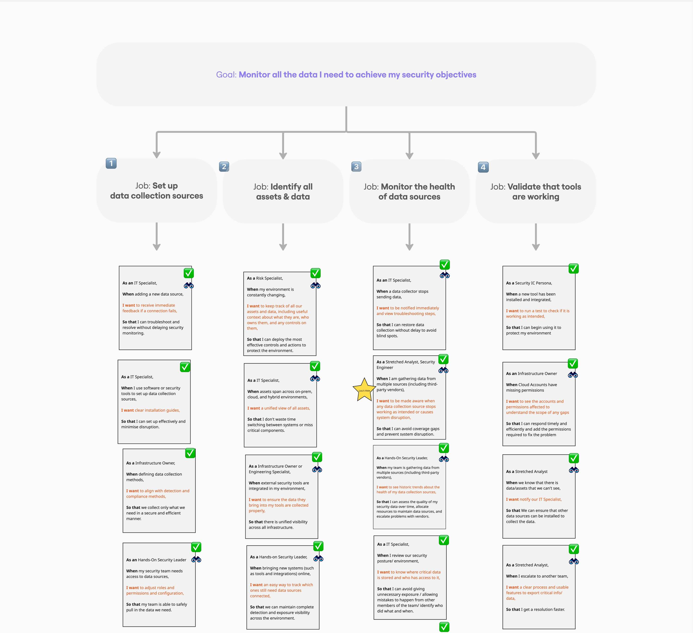
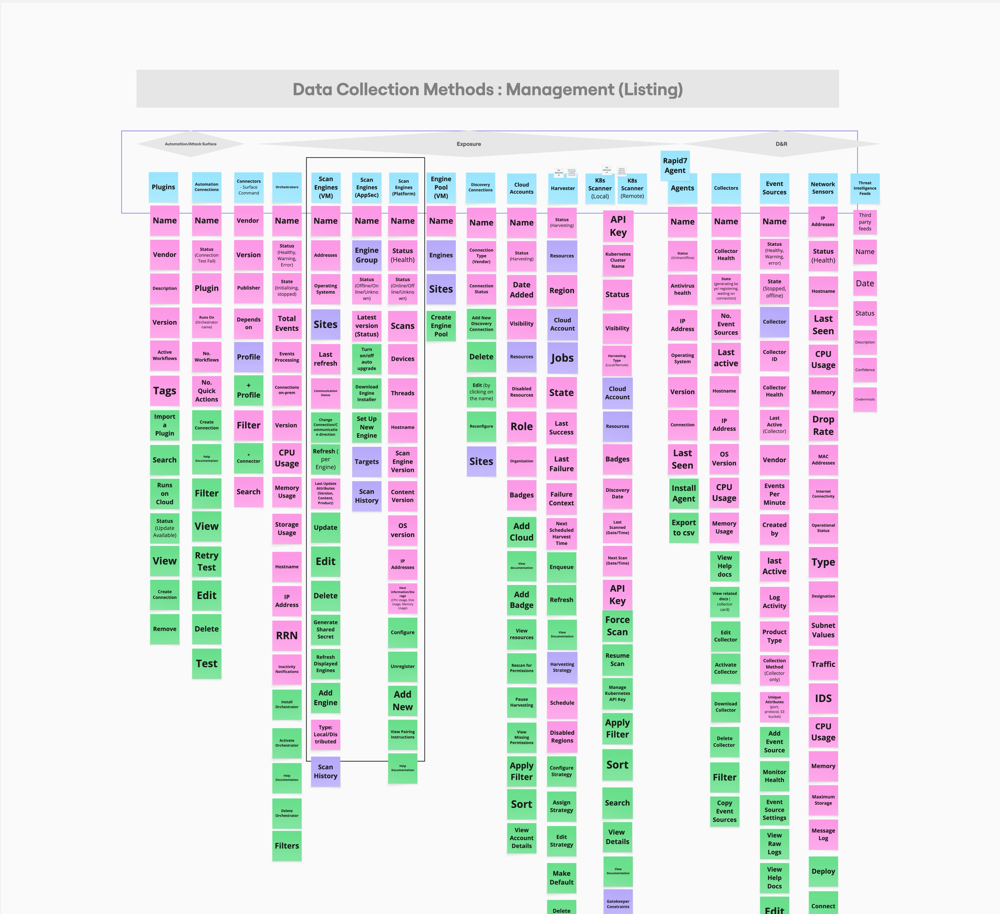
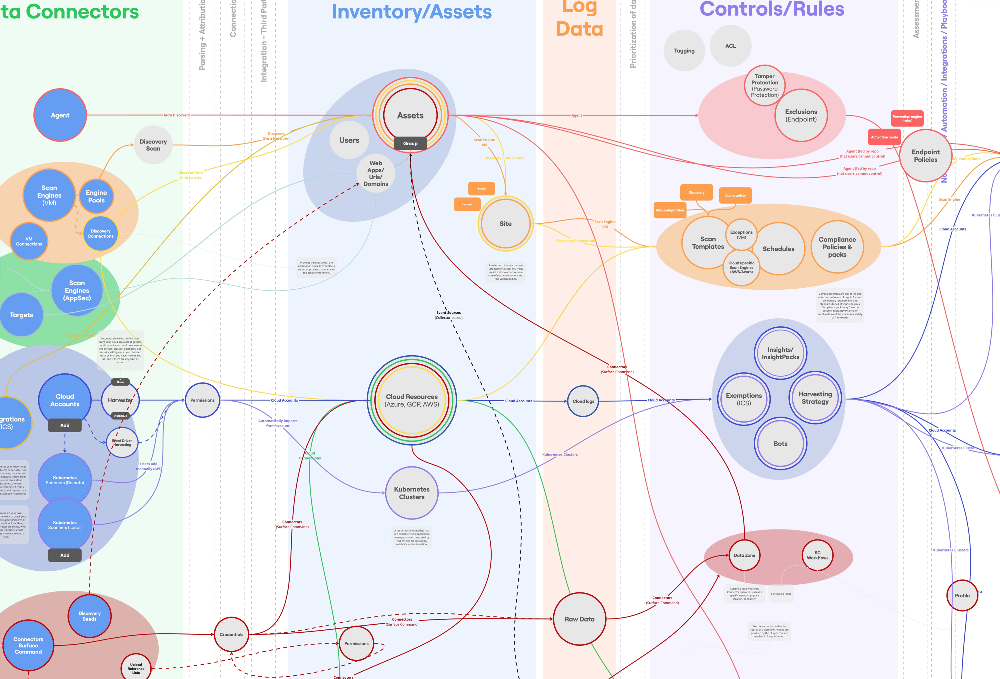
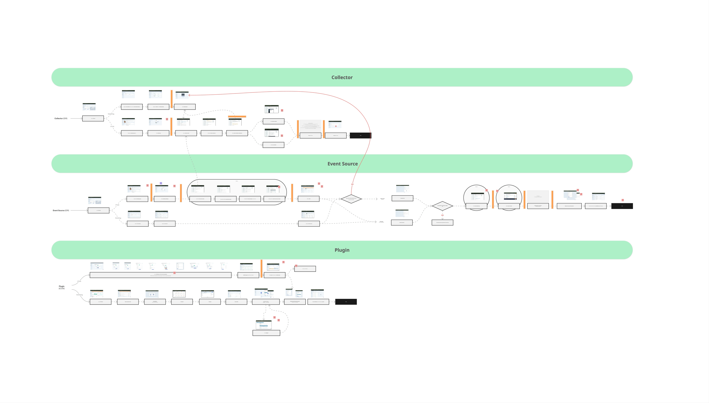
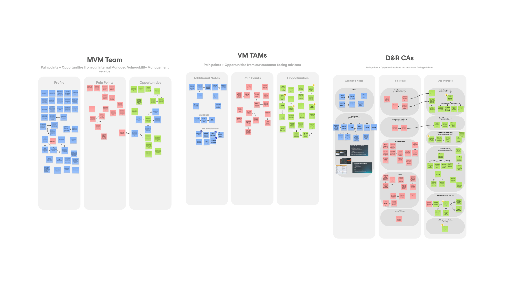
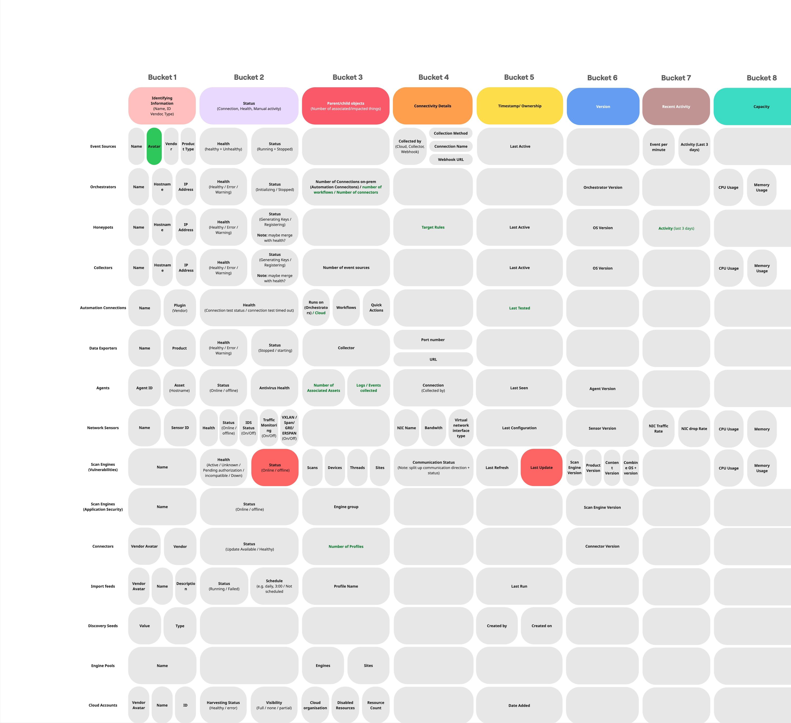
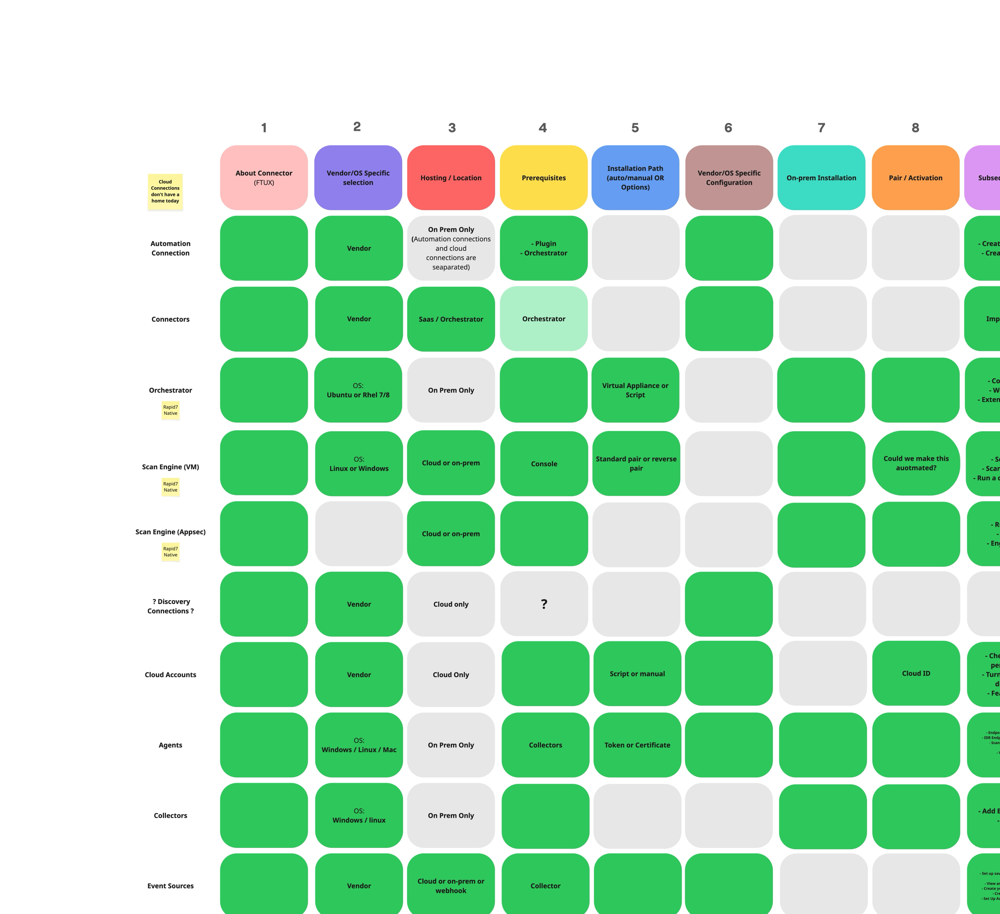
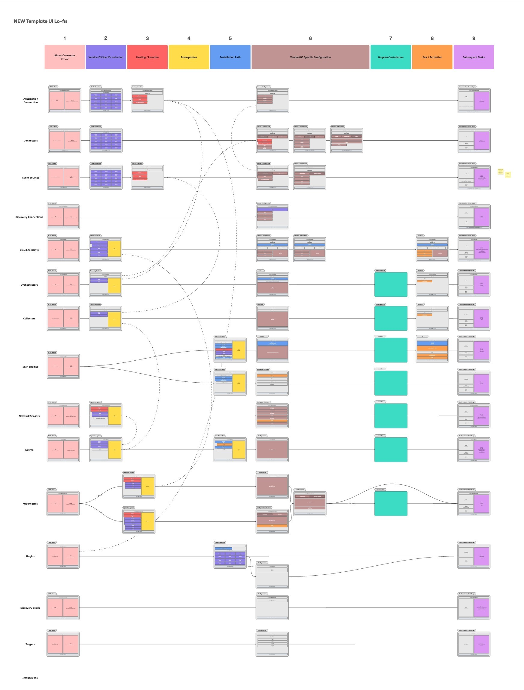

Unified Data Collection
Taking apart a security platform's data collection experiences and recreating them to deliver a more streamlined, user-friendly experience.
User Problem
With many ways to import assets and ingest log data into the platform, users are often left overwhelmed. There are unclear guidelines on exactly what they need to set up, when, and how — resulting in many users never receiving the true capability of the platform.
Goal
Design a consistent, streamlined experience for setting up, monitoring, and managing integrations, scan engines, and other data collection methods.
The solution should cater for users of all maturity levels, ensuring they have the guidance, resources, and visibility they need to correctly set up and monitor their environment.
Identifying all moving parts
My first step in tackling this mammoth task was to audit the platform and identify all log and asset ingestion methods. This task came with some challenges.
Each product in the platform had various different methods of collecting data — some predominant connectors, but also some small, insignificant methods that I missed initially, as my definition of what a data connector was, was quite vague.
Understanding the jobs to be done by users
I defined four stages that a user navigates with data collection:
- Setup data collection sources.
- Identify all assets and data.
- Monitor the health of data sources.
- Validate that tools are working.
I then created user stories for each stage of the jobs that a user would do for each type of data connector.
This enabled me to get a better idea of how I could streamline the experience.

Content modeling setup and monitoring experiences
To properly unify the data collection experience, I needed to content model the "add" and "view" experience. This gave me a clear view of all the attributes common and unique to each data connector.
With this, I could map out a consistent experience for each type, so the user knows what to expect.
This was my first time content modelling, which was a huge learning curve, but enabled me to view data and UI in a completely different light. I now use this in every piece of work I do.

Data Modelling
I then moved on to data model the journey of a log and asset throughout the platform ecosystem. Tracking them from when they were collected/ingested, the whole way to what they become in a security incident/case.
By mapping out the data stream, I uncovered similarities between the data and assets, what types of rules they flow through, what findings they become, and most importantly, what type of alert they transform into.
This was my first time data modelling. The scale of this task gave me a great insight into systems design and how data transforms into tangible insights.

Auditing the data collection setup experiences
Once I had understood each of the objects well enough, I then delved into the current experience of setting up each of the data connectors/integrations.
I spent quite some time studying documentation and going through each of the flows myself to get a feel for it, documenting pain points and opportunities along the way.

User Insights
Whilst going through the setup flows, I had gathered quite a few questions on how and why things worked a certain way.
I interviewed teams of security solutions engineers, devops engineers, and CAs to get their input, as these folks all work as part of the managed services and use the documentation and UI more than enterprise customers.
The findings from this included a lot of frustration, confusion, and want for a better experience.

Mapping out the 'view' experience
Using a similar artifact to the 'add' experience, I modeled the listing pages using common attributes. This allowed me to apply consistency to the monitoring of data connectors.
- Identifying information (vendor logo, name, ID)
- Status (connection, health, activity)
- Parent/child objects (number of associated items)
- Timestamp (date added, last updated)
- Version (if applicable)
- Recent activity (if applicable)
- Capacity (if applicable)

Unifying and streamlining the flows
Now that I understood the frustrations from users and my own experience, I began to map out the system for setting connectors up.
I used a grid and 'buckets' to define stages of setup based on current flows. I then slotted each of the data connector setups into this modular system.
I was surprised it worked so well — I now had a dynamic, consistent framework.

Transferring the framework into wireframes
Working through the experience in wireframes to bring the modular framework to life.

What I Learned
This was my first time working at a systems design level — looking across multiple products, working out how each one actually functioned under the hood, and identifying the similarities between them to map out a single, unified approach. It fundamentally changed how I think about data and interfaces, and it's a way of thinking I now bring into every piece of work I do.
It was also a great lesson in artifact-based communication. When I shared these models and diagrams with internal stakeholders, they didn't just validate the direction of the design — they actually helped people understand our own system better than they had before. Watching a sprawling, complex platform get distilled into a handful of clear diagrams, and seeing the effect that had on how the team talked about the system, was a huge win, and one of the most rewarding parts of this project.
User Settings & Resources
A centralised hub for all user-level settings and a global navigation bar for all global resources.